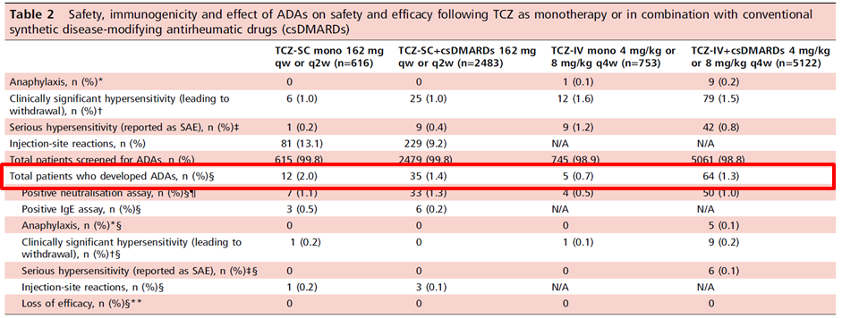

７．ヒト型抗体のため、抗体発現頻度が低いです
ACTはSC/IVともに免疫原性が低い

ACTは国内外の計8,974患者でTCZ-SC,IVの免疫原性プロファイルを調査した 結果、SCでもIVでも、Monoでも併用でも免疫原性リスクが0.7-2.0％と低いことが大規模解析で証明されています。
また、抗TCZ抗体が発現しても薬物動態、有効性、安全性への影響を示さないことが確認されています。
- ●目的：RA患者へのTCZ-SC,TCZ-IVをCombとMonoで使用した際の抗体発現率と有効性・安全性への影響を調べる
- ●方法：PhaseⅢ（TCZ-SC5試験、TCZ-IV8試験）と安全性のTCZ-IV1試験の計8,974患者で、TCZ-SC,IVの免疫原性プロファイルを調査した
